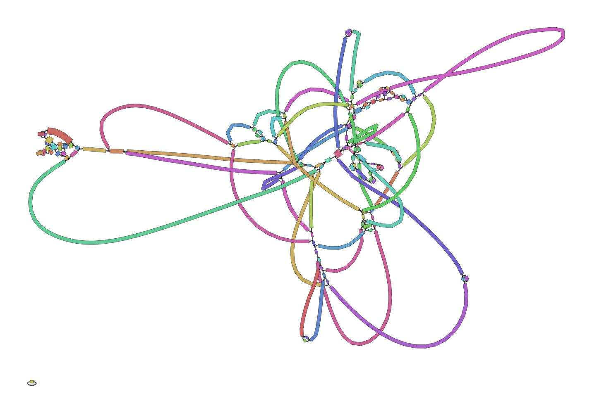
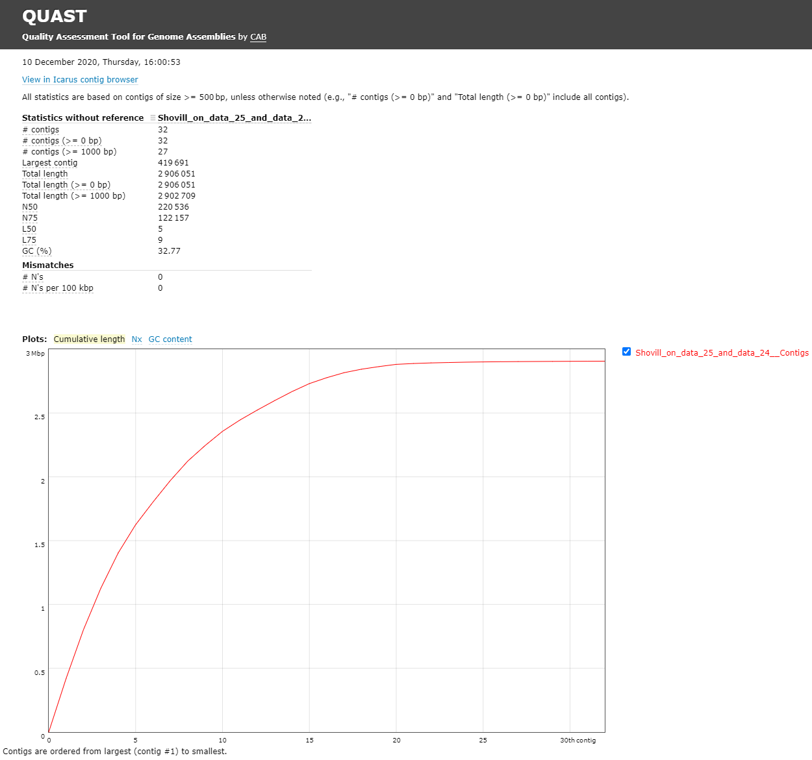

Genome Assembly of MRSA using Illumina MiSeq Data
 Bazante Sanders
Bazante Sanders Miaomiao Zhou
Miaomiao Zhou Saskia Hiltemann
Saskia Hiltemann Helena Rasche
Helena RascheOverview
Questions:Objectives:
How to check the quality of the MiSeq data?
How to perform an assembly with MiSeq data?
What species do I have and what is its sequence type?
Which resistance genes are on my genome?
Where are the genes located on my genome?
Requirements:
Assess your data on quality and quantity
Assemble a genome
Assess your assembly quality
Assess presence of antimicrobial resistance genes
Perform a species identification and MLST typing
Search for resistance genes on the assembly
Find a gene on your genome using Prokka + JBrowse
- Introduction to Galaxy Analyses
- Sequence analysis
- Quality Control: slides slides - tutorial hands-on
Time estimation: 2 hoursSupporting Materials:Last modification: Jun 17, 2021
 Questions:
Questions:
Introduction
In this training you’re going to make an assembly of data produced by “Complete Genome Sequences of Eight Methicillin-Resistant Staphylococcus aureus Strains Isolated from Patients in Japan” from Hikichi et al. 2019 which describes:
Methicillin-resistant Staphylococcus aureus (MRSA) is a major pathogen causing nosocomial infections, and the clinical manifestations of MRSA range from asymptomatic colonization of the nasal mucosa to soft tissue infection to fulminant invasive disease. Here, we report the complete genome sequences of eight MRSA strains isolated from patients in Japan.
Agenda
In this tutorial, we will cover:
Background
Sequencing (determining of DNA/RNA nucleotide sequence) is used all over the world for all kinds of analysis. The product of these sequencers are reads, which are sequences of detected nucleotides. Depending on the technique these have specific lengths (30-500bp) or using Oxford Nanopore Technologies sequencing have much longer variable lengths.
Illumina MiSeq sequencing
Illumina MiSeq sequencing is based on sequencing by synthesis. As the namesuggests, fluorescent labels are measured for every base that bind at aspecific moment at a specific place on a flow cell. These flow cells arecovered with oligos (small single strand DNA strands). In the librarypreparation the DNA strands are cut into small DNA fragments (differs perkit/device) and specific pieces of DNA (adapters) are added, which arecomplementary to the oligos. Using bridge amplification large amounts ofclusters of these DNA fragments are made. The reverse string is washed away,making the clusters single stranded. Fluorescent bases are added one by one,which emit a specific light for different bases when added. This is happeningfor whole clusters, so this light can be detected and this data is basecalled(translation from light to a nucleotide) to a nucleotide sequence (Read). Forevery base a quality score is determined and also saved per read. Thisprocess is repeated for the reverse strand on the same place on the flowcell, so the forward and reverse reads are from the same DNA strand. Theforward and reversed reads are linked together and should always be processedtogether!
For more information watch this video from Illumina
hands_on Hands-on: Data upload
- Create a new history for this tutorial
Import Tool: upload1 the files from Zenodo or from the shared data library
https://zenodo.org/record/4534098/files/DRR187559_1.fastqsanger.bz2 https://zenodo.org/record/4534098/files/DRR187559_2.fastqsanger.bz2Tip: Importing via links
- Copy the link location
Open the Galaxy Upload Manager (galaxy-upload on the top-right of the tool panel)
- Select Paste/Fetch Data
Paste the link into the text field
Press Start
Close the window
- By default, Galaxy uses the URL as the name, so rename the files with a more useful name.
Tip: Importing data from a data library
As an alternative to uploading the data from a URL or your computer, the files may also have been made available from a shared data library:
- Go into Shared data (top panel) then Data libraries
- Navigate to the correct folder as indicated by your instructor
- Select the desired files
- Click on the To History button near the top and select as Datasets from the dropdown menu
- In the pop-up window, select the history you want to import the files to (or create a new one)
- Click on Import
Convert the datatype of this output to uncompress it
Tip: Converting the file format
- Click on the galaxy-pencil pencil icon for the dataset to edit its attributes
- In the central panel, click on the galaxy-gear Convert tab on the top
- Select
Convert compressed to uncompressed- Click the Convert datatype button
Rename the uncompressed dataset to just the sequence run ID:
DRR187559_1andDRR187559_2Tip: Renaming a dataset
- Click on the galaxy-pencil pencil icon for the dataset to edit its attributes
- In the central panel, change the Name field to
DRR187559_1- Click the Save button
Tag the dataset
#unfilteredTip: Adding a tag
- Click on the dataset
- Click on galaxy-tags Edit dataset tags
Add a tag starting with
#Tags starting with
#will be automatically propagated to the outputs of tools using this dataset.- Check that the tag is appearing below the dataset name
View galaxy-eye the renamed file
question Question
- What are the 4 main features of each read in a fastq file.
- What does the
_1and_2mean in your filenames?solution Solution
The following:
- A
@followed by a name and sometimes information of the read- A nucleotide sequence
- A
+(optional followed by the name)- The quality score per base of nucleotide sequence (Each symbol represents a quality score, which will be explained later)
Forward and reverse reads, by convention, are labelled
_1and_2, but they might also be_f/_ror_r1/_r2.
Quality Control
When assessing the fastq files all bases had their own quality (or Phred score) represented by symbols. You can read more in our dedicated Quality Control Tutorial.
To assess the quality by hand would be too much work. That’s why tools like NanoPlot or FastQC are made, which will generate a summary and plots of the data statistics. NanoPlot is mainly used for long-read data, like ONT and PACBIO and FastQC for short read, like Illumina and Sanger.
Before doing any assembly, the first questions you should ask about your input reads include:
- What is the coverage of my genome?
- How good are my reads?
- Do I need to ask/perform for a new sequencing run?
- Is it suitable for the analysis I need to do?
hands_on Hands-on: QC & Filtering
- FastQC Tool: toolshed.g2.bx.psu.edu/repos/devteam/fastqc/fastqc/0.72+galaxy1 with the following parameters:
- param-files “Short read data from your current history”:
DRR187559_1andDRR187559_2- Examine the output “WebPage” files
| DRR187559_1 | DRR187559_2 |
|---|---|
 |
 |
FastQC combines all quality statistics from all separate reads and combines them in plots. An important plot is the Per base sequence quality. Here you have the reads sequence length on the x-axes against the quality score (Phred-score) on the y-axis. The y-axis is divided in three sections: Green = good quality, Orange = mediocre quality and red = bad quality. For Illumina data it is normal that the first few bases are of some lower quality and how longer the reads get the worse the quality becomes. This is often due to signal decay or phasing during the sequencing run.
For each position, a boxplot is drawn with:
- the median value, represented by the central red line
- the inter-quartile range (25-75%), represented by the yellow box
- the 10% and 90% values in the upper and lower whiskers
- the mean quality, represented by the blue line
Depending on the analysis it could be possible that a certain quality or length is needed. In this case we’re going to trim the data using Trimmomatic. Here we will trim the start (LEADING) and end (TRAILING)of the reads if those fall below a quality score of 20. Different trimming tools have different algorithms for deciding when to cut but trimmomatic will cut based on the quality csore of one base alone. Trimmomatic starts from each end, and as long as the base is below 20, it will be cut until it reaches one greater than 20. A sliding window trimming will be performed where if the average quality of 4 bases drops below 20, the read will be truncated there. And last we will also filter for reads which are at least 30 bases long, anything shorter will complicate the assembly and we will drop.
hands_on Hands-on: Assessing the data quality of the trimmed reads and comparing to the input reads
- Trimmomatic Tool: toolshed.g2.bx.psu.edu/repos/pjbriggs/trimmomatic/trimmomatic/0.38.1 with the following parameters:
- “Single-end or paired-end reads?”:
Paired-end (two separate input files)
- param-file “Input FASTQ file (R1/first of pair)”:
DRR187559_1 uncompressed- param-file “Input FASTQ file (R2/second of pair)”:
DRR187559_2 uncompressed- “Perform initial ILLUMINACLIP step?”:
Yes- In “Trimmomatic Operation”:
- param-repeat “Insert Trimmomatic Operation”
- “Select Trimmomatic operation to perform”:
Cut bases off the start of a read, if below a threshold quality (LEADING)
- “Minimum quality required to keep a base”:
20- param-repeat “Insert Trimmomatic Operation”
- “Select Trimmomatic operation to perform”:
Cut bases off the end of a read, if below a threshold quality (TRAILING)
- “Minimum quality required to keep a base”:
20- param-repeat “Insert Trimmomatic Operation”
- “Select Trimmomatic operation to perform”:
Sliding window trimming (SLIDINGWINDOW)
- “Number of bases to average across”:
4- “Average quality required”:
20- param-repeat “Insert Trimmomatic Operation”
- “Select Trimmomatic operation to perform”:
Drop reads below a specified length (MINLEN)
- “Minimum length of reads to be kept”:
30This produces two sets of output files, the R1/R2 paired, and R1/R2 unpaired.
- The first first two are the paired reads, the reads in each of those files match up.
- The second two are the unpaired reads where one of the two reads was discarded.
Edit the tags of the trimmomatic outputs. Remove the
#unfilteredtag and add a new tag,#filteredTip: Adding a tag
- Click on the dataset
- Click on galaxy-tags Edit dataset tags
Add a tag starting with
#Tags starting with
#will be automatically propagated to the outputs of tools using this dataset.- Check that the tag is appearing below the dataset name
- FastQC Tool: toolshed.g2.bx.psu.edu/repos/devteam/fastqc/fastqc/0.72+galaxy1 with the following parameters:
- param-files “Short read data from your current history”:
Trimmomatic on DRR187559_1 (R1 Paired)andTrimmomatic on DRR187559_2 (R2 Paired)- MultiQC Tool: toolshed.g2.bx.psu.edu/repos/iuc/multiqc/multiqc/1.9 with the following parameters:
- In “Results”:
- param-repeat “Insert Results”
- “Which tool was used generate logs?”:
FastQC
- In “FastQC output”:
- param-repeat “Insert FastQC output”
- param-files “FastQC output”: select all of the
FastQC on data ... RawDatafiles. You should have 4; 2 FastQCs from before trimming, 2 from after trimming.
MultiQC is a tool to combine multiple outputs in one clear and easy to read overview. It generates plots to easily visualize the different quality statistics of all your fastq files.
question Question
Looking at your
MultiQC on data ....: Webpageoutput, answer the following questions:
- How did the duplicate reads change from before to after?
- How did the average read length change?
- Did trimming improve the mean quality scores?
- Did trimming affect the GC content?
- Is this data ok to assemble? Do we need to re-sequence it?
solution Solution
- There were slight decreases in duplicate reads (19.8% → 18%, 21.2% → 20.5%)
- Read lengths went down more significantly; 191 to 152 bp, and 221 to 192 bp. These are still probably fine for assembly but you’ll see that MultiQC has marked the 152 bp result in yellow.
- Yes, definitely. It is most visible at the end of the reads, they stay completely in the “green zone”, unlike the untrimmed data which falls into the yellow.
- No, it did not. If it had, that would be unexpected.
- This data looks OK. The number of shorter reads in R1 is not optimal but it should assemble something. Probably not the entire, closed genomes but something.
Assembly
When the quality of the reads is determined and the data is filtered and/or trimmed (like we did with trimmomatic) an assembly can be made.
There are many tools that create assembly for short-read data, but in this tutorial Shovill will be used. Shovill is a SPAdes based genome assembler, improved to work faster and only for smaller (bacterial) genomes.
Results may vary
Your results may be slightly different from the ones presented in this tutorial due to differing versions of tools, reference data, external databases, or because of stochastic processes in the algorithms.
hands_on Hands-on: Assembly using Shovill
- Shovill Tool: toolshed.g2.bx.psu.edu/repos/iuc/shovill/shovill/1.1.0+galaxy0 with the following parameters:
- “Input reads type, collection or single library”:
Paired End
- param-file “Forward reads (R1)”:
Trimmomatic on DRR187559_1 uncompressed (R1 paired)- param-file “Reverse reads (R2)”:
Trimmomatic on DRR187559_2 uncompressed (R2 paired)- In “Advanced options”:
- “Estimated genome size”:
2914567- “Minimum contig length”:
500View galaxy-eye the
Contigsfile:question Question
- How big is the first contig?
- What is the coverage of your biggest (first) contig?
solution Solution
Both of these can be found in the header line of the Contigs produced by Shovill
NOTE: The results can differ from this example, because Shovill can differ a bit per assembly
- 419691 bp
- 14.1
Bandage Image Tool: toolshed.g2.bx.psu.edu/repos/iuc/bandage/bandage_image/0.8.1+galaxy2 with the following parameters:
- param-file “Graphical Fragment Assembly”:
Shovill on ... Contig GraphView galaxy-eye the assembly graph image

question Question
First read this page in the Bandage wiki to help understand what the graph means.
- What do you think of this assembly? Is it useful? Is it good enough?
solution Solution
- This is a very messy assembly, with a lot of potential paths through the sequence. We cannot feel confident in the output .fasta file (as it is much smaller than the expected 2.9Mbp). In real life we might consider doing a hybrid assembly with Nanopore or other long read data to help resolve these issues.
Genome Assembly Evaluation
Quast (Gurevich et al. 2013) is a tool providing quality metrics for assemblies, and can also be used to compare multiple assemblies. The tool can also take an optional reference file as input, and will provide complementary metrics. QUAST stands for QUality ASsessment Tool. With later updates gene annotation also possible with QUAST.
hands_on Hands-on: Quality Control of assembly using Quast
- Quast Tool: toolshed.g2.bx.psu.edu/repos/iuc/quast/quast/5.0.2+galaxy1 with the following parameters:
- “Use customized names for the input files?”:
No, use dataset names
- param-file “Contigs/scaffolds file”:
Shovill on ... ContigsView galaxy-eye the HTML report from QUAST
The Quast tool outputs assembly metrics as an html file with metrics and graphs. The image below looks exceptionally boring. This is a good thing, because each corner means one contig. A contig is the contiguous sequence made by combining all separate reads in the assembly

This fasta file contains 32 contigs, meaning the chromosome is separated over multiple contigs. These contigs can also contain (parts of) plasmids.
question Question
- What is you GC content?
solution Solution
- The GC content for our assembly was 32.77% (for comparison MRSA Isolate HC1335 Strain GC% is 32.89%). This means the length and GC% of the assembly could be good!
Identification of AMR Genes
Because we are working with a MRSA we are curious to see which resistance genes are located on the genome or on the plasmid. To determine whether the contigs contain antimicrobial resistance (AMR) genes staramr can be used Staramr scans bacterial genome contigs against both the ResFinder (Zankari et al. 2012), PointFinder (Zankari et al. 2017), and PlasmidFinder (Carattoli et al. 2014) databases (used by the ResFinder webservice) and compiles a summary report of detected antimicrobial resistance genes.
hands_on Hands-on: Run staramr
- staramr Tool: toolshed.g2.bx.psu.edu/repos/nml/staramr/staramr_search/0.7.1+galaxy2 with the following parameters:
- param-file “genomes”:
Shovill on data ... ContigsThere are 7 different output files produced by staramr tool:
File Contents summary.tsv A summary of all detected AMR genes/mutations in each genome, one genome per line. detailed_summary.tsv A detailed summary of all detected AMR genes/mutations of each genome, one line per feature and multiple lines per genome. resfinder.tsv A tabular file of each AMR gene and additional BLAST information from the ResFinder database, one gene per line. Plasmidfinder.tsv A tabular file of each plastid sequences with additional BLAST information from the PlasmidFinder database, one sequence per line. settings.txt The command-line, database versions, and other settings used to run staramr. mlst.tsv A tabular file of the found loci per genome with its specified MLST scheme. results.xlsx An Excel spreadsheet containing the previous 4 files as separate worksheets. - View galaxy-eye the detailed_summary.tsv file
- In this example the ST-typing could not be obtained. Multi-locus sequence type (MLST) is based on specific locus/alleles, which is sometimes hard to determine with error rich sequence data (like NanoPore).
- For the plasmid and resistance results the identity, overlap, length and the location on the contig can be found here.
- Multiple rep sequences are located on the second contig. (See “plasmid typing for gram-positive bacteria” Lozano et al. 2012 for more information)
- Multiple resistance genes can be found on both contig 1 and contig 2.
- In the last column there are “Accession” numbers. These are references to NCBI, and you can search for these numbers there. E.g. M13771
CARD database
To get more information about these antibiotic resistant genes, you can check the CARD database (Comprehensive Antibiotic Resistance Database) (Jia et al. 2016)

CARD can be very helpful to check all the resistance genes and check if it is logical to find the resistance gene in a specific bacteria.
question Question
- To what family does mecA belong?
- Do you expect to find this gene in this MRSA strain and why?
- Is the accession number of the entry related to the accession reported by staramr?
solution Solution
- Methicillin resistant PBP2
- The strain we use is a Methicillin(multi) resistant Staphylococcus aureus. As
mecAhas a perfect resistome mach with S. aureus, and the AMR Gene Family is methicillin resistant PBP2, we expect to see mecA in MRSA.- No, these are completely unrelated. Unfortunately this is a very common issue in bioinformatics. Everyone builds their own numbering system for entries in their database (usually calling them ‘accessions’), and then someone else needs to build a service to link these databases.
Gene annotation using Prokka
Prokka is a tool software tool to rapidly annotate bacterial, archaeal and viral genomes. Prokka will be used on your own made genome (assembly). Prokka will try to annotate the bacteria based on related species and starting codons can be chosen or default of the species can be used.
JBrowse is used to visualize
your genome file and merge multiple outputs.
In this case you will use your assembly as your reference and the output
from prokka as an information track.
hands_on Hands-on: Annotating the Genome
- Prokka Tool: toolshed.g2.bx.psu.edu/repos/crs4/prokka/prokka/1.14.5+galaxy0 with the following parameters:
- param-file “Contigs to annotate”:
Shovill on data ... Contigs- “Genus name (–genus)”:
staphylococcus- “Species name (–species)”:
aureus- “Kingdom (–kingdom)”:
Bacteria- “Additional outputs”: Select only the “Annotation in GFF3 format contaianing both sequences and annotations”
- Select lines that match an expression Tool: Grep1 with the following parameters:
- param-file “Select lines from”:
staramr on data .. detailed_summary.tsv- “that”: Matching
- “the pattern”:
[0-9]+\.[0-9]+\tThis will select lines with a decimal value (###.##) followed by a tab character, the column separator in Galaxy. As a result, any lines without an identity value will be filtered out.
- Table to GFF3 Tool: toolshed.g2.bx.psu.edu/repos/iuc/tbl2gff3/tbl2gff3/1.2
- param-file “Table”: the output of the above Select lines tool step.
- “Record ID column or value”:
8- “Feature start column or value”:
9- “Feature end column or value”:
10- “Feature score column or value”:
5- “Feature source column or value”:
3- param-repeat “Insert Qualifiers”
- “Name”:
Name- “Qualifier value column or raw text”:
2- param-repeat “Insert Qualifiers”
- “Name”:
phenotype- “Qualifier value column or raw text”:
4- param-repeat “Insert Qualifiers”
- “Name”:
accession- “Qualifier value column or raw text”:
11- Bowtie2 Tool: toolshed.g2.bx.psu.edu/repos/devteam/bowtie2/bowtie2/2.3.4.3+galaxy0 with the following parameters:
- “Is this single or paired library”:
Paired-end
- param-file “FASTA/Q file #1”:
Trimmomatic on DRR187559_1 uncompressed (R1 paired)(output of Trimmomatic tool)- param-file “FASTA/Q file #2”:
Trimmomatic on DRR187559_2 uncompressed (R2 paired)(output of Trimmomatic tool)- “Will you select a reference genome from your history or use a built-in index?”:
Use a genome from the history and build index
- param-file “Select reference genome”:
contigs(output of Shovill tool)- “Select analysis mode”:
1: Default setting only- You should have a look at the non-default parameters and try to understand them, but they don’t need to be changed currently.- “Save the bowtie2 mapping statistics to the history”:
Yes- JBrowse Tool: toolshed.g2.bx.psu.edu/repos/iuc/jbrowse/jbrowse/1.16.9+galaxy0 with the following parameters:
- “Reference genome to display”:
Use a genome from history
- param-file “Select the reference genome”:
Shovill on ...: Contigs(output of Shovill assembly tool)- “Genetic Code”:
11. The Bacterial, Archaeal and Plant Plastid Code- In “Track Group”:
- param-repeat “Insert Track Group”
- “Track Category”:
Prokka- In “Annotation Track”:
- param-repeat “Insert Annotation Track”
- “Track Type”:
GFF/GFF3/BED Features
- param-file “GFF/GFF3/BED Track Data”:
Prokka on data ...: gff(output of Prokka tool)- “JBrowse Track Type [Advanced]”:
Neat Canvas Features- “Track Visibility”:
On for new users- param-repeat “Insert Track Group”
- “Track Category”:
AMR- In “Annotation Track”:
- param-repeat “Insert Annotation Track”
- “Track Type”:
GFF/GFF3/BED Features
- param-file “GFF/GFF3/BED Track Data”:
Table to GFF3 on ..., the output of the table to gff3 step- “JBrowse Track Type [Advanced]”:
Neat Canvas Features- “Track Visibility”:
On for new users- param-repeat “Insert Track Group”
- “Track Category”:
Sequencing- In “Annotation Track”:
- param-repeat “Insert Annotation Track”
- “Track Type”:
BAM Pileups
- param-file “BAM Track Data”: Bowtie2’s output
- “Autogenerate SNP Track”:
Yes- View the output of JBrowse
In the output of the JBrowse you can view the mapped reads and the found genes against the reference genome. With the search tools you can easily find genes of interest. JBrowse can handle many inputs and can be very useful. Using the bowtie2 mapping output, low coverage regions can be detected. This SNP detection can also give a clear view of where the data was less reliable or where variations were located.
If it takes too long to build the JBrowse instance, you can view an embedded one here. (Warning: feature name search will not work.)
Conclusion
Key points
Illumina assemblies can be done with Shovill, but the assemblies are not completely resolved
Annotation with Prokka is very easy
Frequently Asked Questions
Have questions about this tutorial? Check out the FAQ page for the Assembly topic to see if your question is listed there. If not, please ask your question on the GTN Gitter Channel or the Galaxy Help ForumReferences
- Lozano, C., Garcı́a-Migura Lourdes, C. Aspiroz, M. Zarazaga, C. Torres et al., 2012 Expansion of a Plasmid Classification System for Gram-Positive Bacteria and Determination of the Diversity of Plasmids in Staphylococcus aureus Strains of Human, Animal, and Food Origins. Applied and Environmental Microbiology 78: 5948–5955. 10.1128/aem.00870-12
- Zankari, E., H. Hasman, S. Cosentino, M. Vestergaard, S. Rasmussen et al., 2012 Identification of acquired antimicrobial resistance genes. Journal of Antimicrobial Chemotherapy 67: 2640–2644. 10.1093/jac/dks261
- Gurevich, A., V. Saveliev, N. Vyahhi, and G. Tesler, 2013 QUAST: quality assessment tool for genome assemblies. Bioinformatics 29: 1072–1075. 10.1093/bioinformatics/btt086
- Carattoli, A., E. Zankari, Garcı́a-Fernández Aurora, M. V. Larsen, O. Lund et al., 2014 In SilicoDetection and Typing of Plasmids using PlasmidFinder and Plasmid Multilocus Sequence Typing. Antimicrobial Agents and Chemotherapy 58: 3895–3903. 10.1128/aac.02412-14
- Jia, B., A. R. Raphenya, B. Alcock, N. Waglechner, P. Guo et al., 2016 CARD 2017: expansion and model-centric curation of the comprehensive antibiotic resistance database. Nucleic Acids Research 45: D566–D573. 10.1093/nar/gkw1004
- Zankari, E., R. Allesøe, K. G. Joensen, L. M. Cavaco, O. Lund et al., 2017 PointFinder: a novel web tool for WGS-based detection of antimicrobial resistance associated with chromosomal point mutations in bacterial pathogens. Journal of Antimicrobial Chemotherapy 72: 2764–2768. 10.1093/jac/dkx217
- Hikichi, M., M. Nagao, K. Murase, C. Aikawa, T. Nozawa et al., 2019 Complete Genome Sequences of Eight Methicillin-Resistant Staphylococcus aureus Strains Isolated from Patients in Japan (I. L. G. Newton, Ed.). Microbiology Resource Announcements 8: 10.1128/mra.01212-19
Feedback
Did you use this material as an instructor? Feel free to give us feedback on how it went.

Citing this Tutorial
- Bazante Sanders, Miaomiao Zhou, Saskia Hiltemann, Helena Rasche, 2021 Genome Assembly of MRSA using Illumina MiSeq Data (Galaxy Training Materials). https://training.galaxyproject.org/training-material/topics/assembly/tutorials/mrsa-illumina/tutorial.html Online; accessed TODAY
- Batut et al., 2018 Community-Driven Data Analysis Training for Biology Cell Systems 10.1016/j.cels.2018.05.012
details BibTeX
@misc{assembly-mrsa-illumina, author = "Bazante Sanders and Miaomiao Zhou and Saskia Hiltemann and Helena Rasche", title = "Genome Assembly of MRSA using Illumina MiSeq Data (Galaxy Training Materials)", year = "2021", month = "06", day = "17" url = "\url{https://training.galaxyproject.org/training-material/topics/assembly/tutorials/mrsa-illumina/tutorial.html}", note = "[Online; accessed TODAY]" } @article{Batut_2018, doi = {10.1016/j.cels.2018.05.012}, url = {https://doi.org/10.1016%2Fj.cels.2018.05.012}, year = 2018, month = {jun}, publisher = {Elsevier {BV}}, volume = {6}, number = {6}, pages = {752--758.e1}, author = {B{\'{e}}r{\'{e}}nice Batut and Saskia Hiltemann and Andrea Bagnacani and Dannon Baker and Vivek Bhardwaj and Clemens Blank and Anthony Bretaudeau and Loraine Brillet-Gu{\'{e}}guen and Martin {\v{C}}ech and John Chilton and Dave Clements and Olivia Doppelt-Azeroual and Anika Erxleben and Mallory Ann Freeberg and Simon Gladman and Youri Hoogstrate and Hans-Rudolf Hotz and Torsten Houwaart and Pratik Jagtap and Delphine Larivi{\`{e}}re and Gildas Le Corguill{\'{e}} and Thomas Manke and Fabien Mareuil and Fidel Ram{\'{\i}}rez and Devon Ryan and Florian Christoph Sigloch and Nicola Soranzo and Joachim Wolff and Pavankumar Videm and Markus Wolfien and Aisanjiang Wubuli and Dilmurat Yusuf and James Taylor and Rolf Backofen and Anton Nekrutenko and Björn Grüning}, title = {Community-Driven Data Analysis Training for Biology}, journal = {Cell Systems} }
Congratulations on successfully completing this tutorial!
Do you want to extend your knowledge? Follow one of our recommended follow-up trainings:
- Visualisation
- Genomic Data Visualisation with JBrowse: slides slides - tutorial hands-on
- Using Galaxy and Managing your Data
- Extracting Workflows from Histories: tutorial hands-on